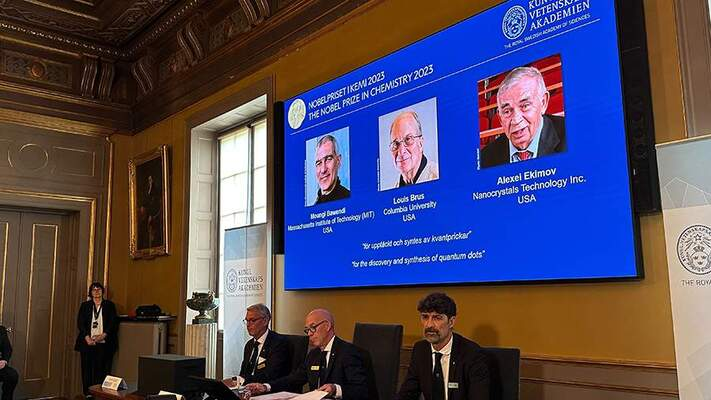
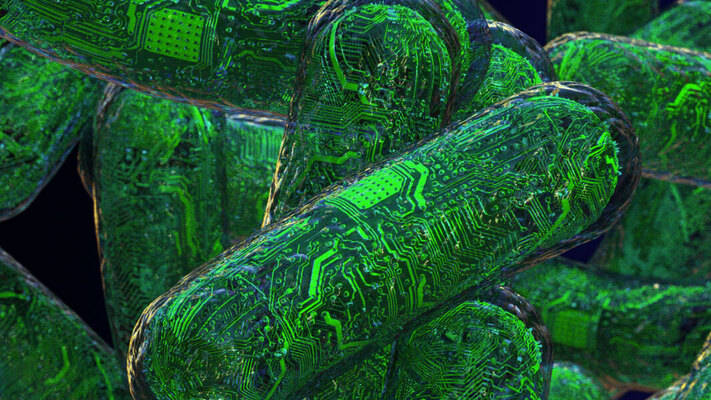
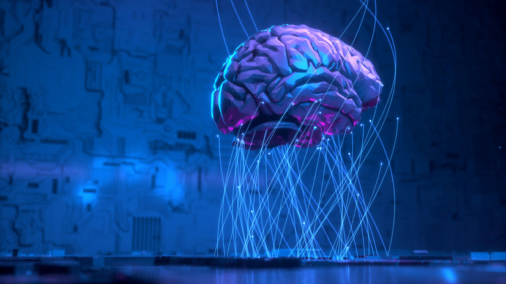

Новости сегодня
radius
Путин заявил о важности развития нанотехнологий, отметив, что без этого у российской экономики нет будущего.
Нобелевскую премию по химии дали создателям квантовых точек. Подробнее в статье

Представлен первый квантовый процессор в 3D-компоновке — кубиты в нём уложены стопкой
Ученые стали на шаг ближе к созданию «биокомпьютеров». Они будут использовать клетки человеческого мозга

«Воспроизводить механизмы работы мозга»: российские учёные — о создании биологического компьютера
